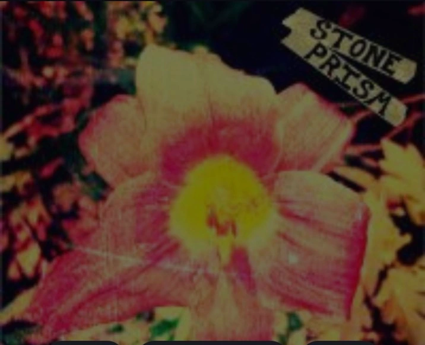
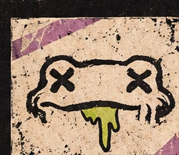
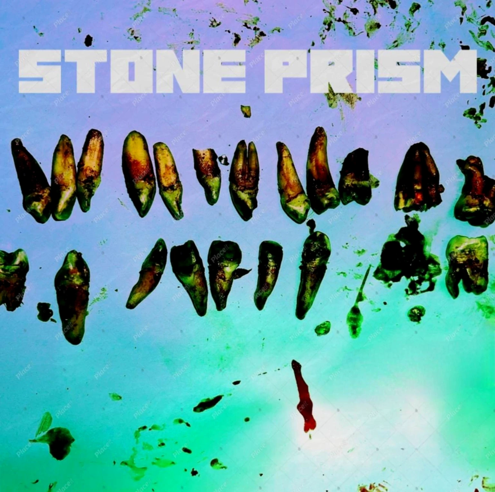

ITEMS PER ROW
THE STONE PRISM MUSIC LIBRARY
The Recording Vault
No recordings have been published yet. Artwork from the archive is below.
Archive artwork

Angel [#]
Pink flower cover from the Stone Prism archive
Song artwork · Audio link not yet available
View artwork ↗
Frog
Cross-eyed frog mascot with green tongue
Artwork archive · Audio link not yet available
View artwork ↗
Teeth / Archive
Experimental teeth collage; concept image has draft marks
Concept artwork · Audio link not yet available
View artwork ↗